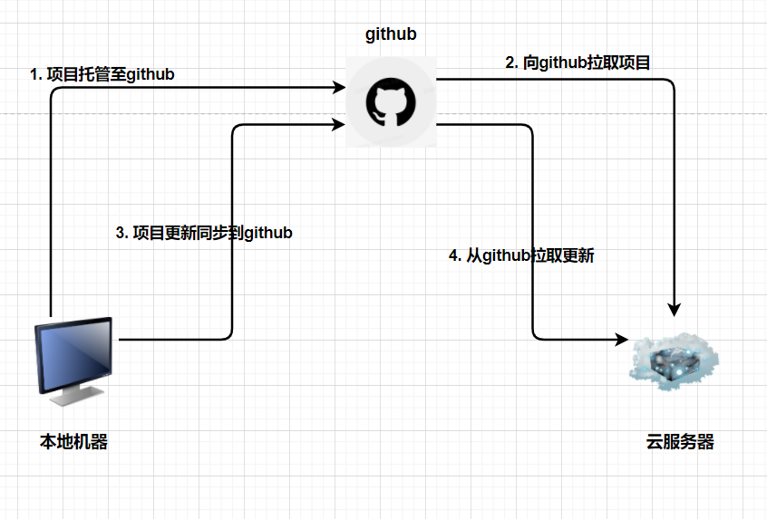

通常来说Web应用主要有C-S和B-S两种架构，其中：
C-S架构：即client-server，需要在用户端单独安装一个客户端，用户通过该客户端与Web服务器交互b-s架构：即browser-server，无需额外安装客户端，用户可以直接通过浏览器与Web服务器进行交互
两种架构各有优劣，展开来讲又是一篇文章，并且网上相关资料很多，有兴趣的读者可以自行查阅。无论是b-s还是c-s，都少不了和Web服务器进行交互，那么我们如何将自己的Web服务器部署到网上，让别人能够通过浏览器(以b-s为例)访问到我们的服务呢？
介绍
关于如何将本地Gin项目部署到远程并且能够通过浏览器进行访问，笔者将其分为前置条件和基本流程两个部分。
前置条件
- 将本地Gin项目托管到github
- 登录云服务器从github拉取Gin项目
这两个前置条件对于本文非常重要，因为后面介绍的流程都是基于该前置条件进行的，所以请读者再次确认自己的项目源码已经被拉取到云服务器中

基本流程
注意
切不可用go run xxx.go这种形式直接启动自己的项目；因为这样做的话ssh一退出，你启动的项目就停止了。
- 基本流程
go build出一个可执行文件- 写一个sh脚本，用来执行上面的可执行文件
- 配置service，将项目配置为linux服务
- 启动service
笔者会在后文对四个步骤进行详细介绍
具体步骤
build
笔者的项目中，package main的文件位main.go，因此直接使用
1 | go build main.go |
此时将会在项目根目录下生成一个名为main的可执行文件，确保该文件可以被执行，笔者建议大家修改该文件的权限
1 | chmod 777 main |
写执行脚本
就在当前项目根目录下，添加一个新文件run.sh
1 | vim run.sh |
文件内容如下
1 |
|
里面的路径和可执行文件的名称读者可以自动替换
注册service
使用下面命令在/lib/systemd/system路径下创建service配置文件
1 | vim /lib/systemd/system/course.service |
其中course为服务名称，这里读者可以自行替换
该文件内容如下
1 | [Unit] |
具体关于service文件中各个模块的含义取值，网上资料很多，有兴趣的读者可以自行查阅
启动
我们可以直接使用上面创建的service来启动我们的服务了，具体命令如下：
- 启动
1 | service course start |
- 重启
1 | service course restart |
- 停止
1 | service course stop |
- 获取状态
1 | service course status |
其中course需要读者替换为前面创建的服务名称。实际上也可以将service直接替换为systemctrl
总结
通过上面的介绍你可以发现部署Gin项目其实非常简单，笔者认为最核心的部分是将Web项目注册为linux系统服务，从而保证我们的项目能够为后台运行。